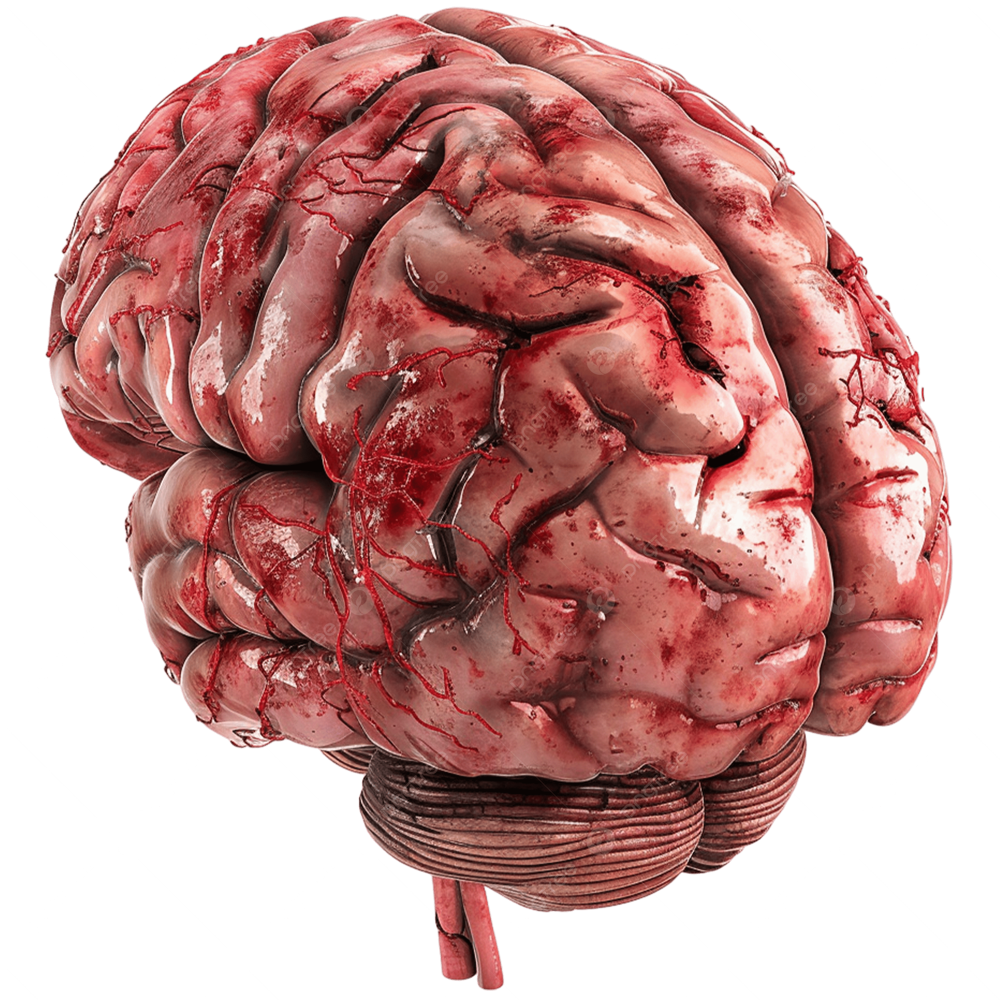

Codex Entry:
“They told me there were only two choices: disappear quietly or ask for help. The easy way out always called louder.”
Note: “The easy way out” = suicide. But this is NOT the path to choose.
If you or anybody you know is struggling with thoughts of suicide, please contact the Suicide & Crisis Lifeline at 988.
Definition: Suicide is the act of intentionally causing one’s own death. It is often linked to intense psychological pain, mental illness, trauma, or hopelessness. But help is available. Your story is not over.
Related Excerpt:
"i thought if i just disappeared, the people watching me would stop. if i just quietly removed myself, maybe the experiment would end.”